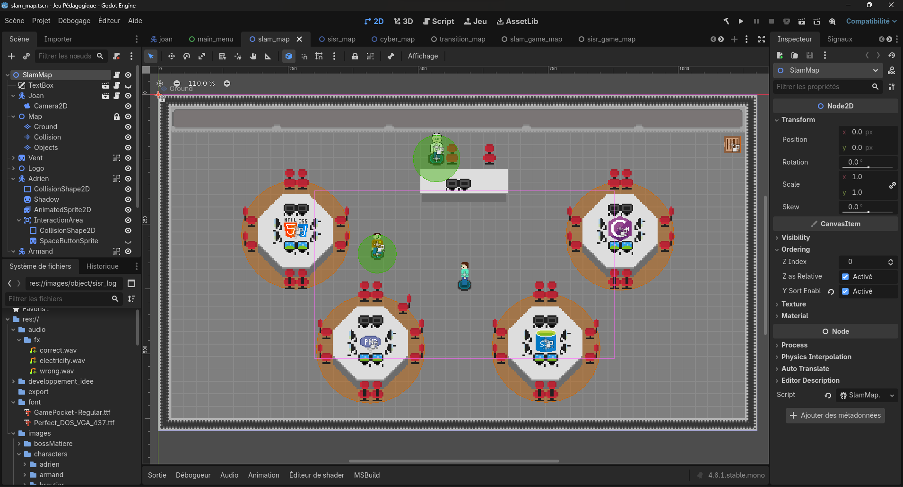

MES PROJETS PROFESSIONNELS
Finir mes deux années de BTS SIO pour enchaîner sur une licence professionnelle.
Je prévois de probablement poursuivre sur un master.
Comme projet personnel, je suis en train de coder des jeu vidéo sur Godot 4.
Il sera disponible sur la page web du campis St Denis lorsqu'il sera terminé.
